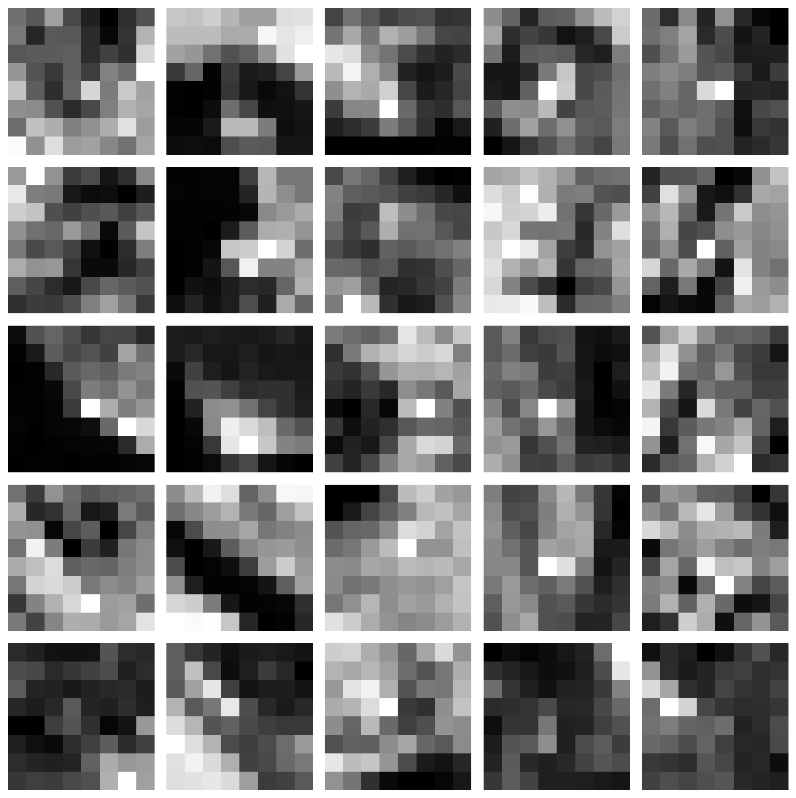
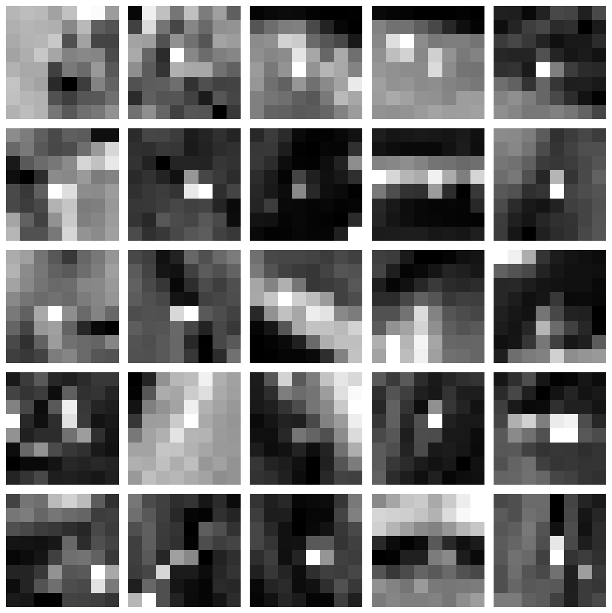
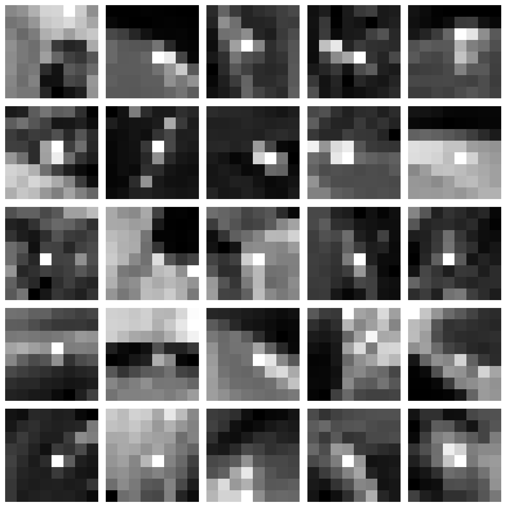
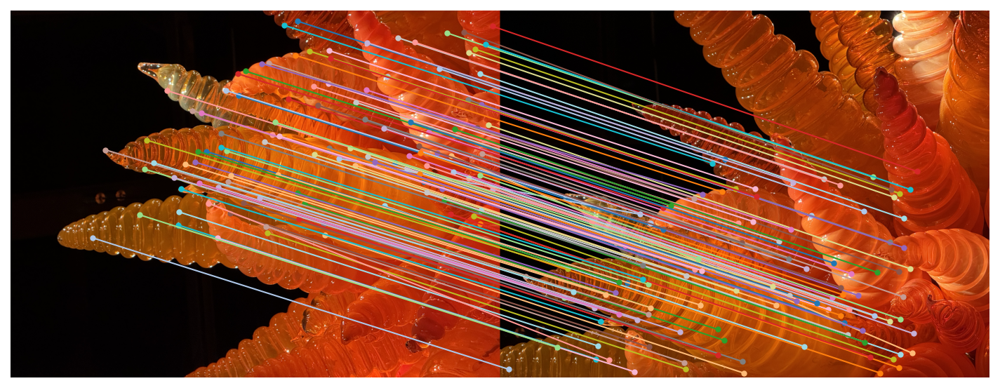

Corner detection can be decomposed into two judgments: where the image contains two-directional variation, and
which
of those locations should be retained as a stable basis for later matching. The Harris response supplies the
first
judgment by measuring whether local gradients provide evidence of structure in more than one direction; a high
score
is interpreted as a location whose appearance is locally informative rather than edge-like or flat. The Harris
map, taken alone, does not enforce a useful distribution. Dense clusters occur whenever repeated texture
generates many neighboring pixels with similar scores, so the raw output is often an over-complete description
of a
single region. Adaptive Non-Maximal Suppression (ANMS) supplies the second judgment by trading quantity for
coverage:
points are retained when they remain strong while also being far from stronger competitors, which spreads the
set
across the object and reduces redundancy.
Example 1 (g2 — green glass)
Harris (raw)
ANMS (suppressed)
The two images in each pair serve as a diagnostic. The Harris visualization indicates the underlying “evidence
field”
(where the image claims to have corners), while the ANMS visualization indicates whether that evidence can be
converted into a spatially balanced set that will not collapse downstream matching into a single textured patch.
The green glass sculpture is a difficult corner source because local appearance is less stable. Translucency and
internal refraction generate view-dependent highlights and low-frequency intensity drift, and darker regions
reduce
signal-to-noise; both effects weaken the gradient evidence that Harris relies on. Increasing
max-harris
to 10000 preserves more marginal candidates so that ANMS can still extract a reasonably distributed set of 450
points
without collapsing onto a few bright highlight boundaries.
Example 2 (r1 — red glass)
Harris (raw)
ANMS (suppressed)
The red glass sculpture provides stronger, more repeatable corner evidence because the dominant cues are stable
surface boundaries and consistent shading transitions. The Harris field therefore contains more clearly
separated
maxima, so fewer raw candidates (max-harris = 6000) are sufficient, and ANMS can retain a smaller
set
(350) while still maintaining broad coverage across the structure.
Failures concentrate where the premise of “corner stability” is violated. Specular highlights can create corners
that move with viewpoint rather than with geometry; repeated micro-texture can produce many near-duplicates that
remain locally strong but do not add new information; and low-texture regions can leave ANMS with little
evidence to
distribute. Success is most reliable when the selected points lie on rigid, high-contrast geometry whose
gradient
structure persists under small viewpoint changes.
B.2 Feature Descriptors
Descriptor extraction can be reduced to three operations: sampling a neighborhood around each retained corner,
canonicalizing that neighborhood into a fixed-dimensional representation, and comparing representations by a
distance rule. The purpose of canonicalization is not aesthetic compression, but invariance: a match should be
driven by local structure that persists across views rather than by absolute exposure or global tone.
Descriptor construction
patch → vector
1) Extract a square patch around each keypoint (grayscale).
2) Apply mild smoothing (stabilizes against pixel noise / aliasing).
3) Downsample to a small canonical grid (e.g., 8×8) to form a compact template.
4) Normalize per patch (zero-mean, unit-variance) to reduce exposure sensitivity.
5) Flatten to a descriptor vector; compare descriptors by L2 distance.
Two diagnostic visualizations are used to judge whether the descriptor is behaving as intended. The
descriptor
points image shows coverage, whether samples span the object and the overlap region instead of collapsing
into a
single cluster. The descriptor patches grid shows discriminability, whether the encoded neighborhoods
contain
stable edges/corners or instead devolve into flat, noisy, or highlight-dominated templates that cannot support
reliable matching.
Example 1 (g2 — green glass)
Descriptor points
Descriptor patches

Again, we emphasize how the green glass case is systematically harder because the local evidence is less
repeatable. Translucency introduces
view-dependent highlights and internal refraction, so a patch centered at the “same” geometric location can
change its
intensity layout between views. Dark regions additionally reduce signal-to-noise; after per-patch normalization,
small
sensor noise can be scaled into meaningful-looking contrast, which makes some templates appear distinctive while
not
being stable.
Example 2 (r1 — red glass)
Descriptor points
Descriptor patches

The red glass case is comparatively cooperative because a larger fraction of the neighborhood structure is
anchored
to stable surface boundaries and consistent gradient patterns. The patch grid therefore contains more repeatable
edge/corner configurations, and the point distribution more often yields keypoints whose descriptors remain
coherent
across viewpoint changes.
Descriptor failure concentrates in (1) low-texture neighborhoods that collapse to noise after normalization,
(2) repeated micro-structure where many patches are genuinely similar and therefore ambiguous, and
(3) specular/refractive regions where appearance is not attached to the surface. Descriptor success is most
reliable
when the neighborhood contains rigid, high-contrast geometry that preserves its gradient structure across views.
B.3 Feature Matching
Feature matching can be treated as a test of whether the descriptor representation is sufficiently distinctive
and
sufficiently repeatable to survive a viewpoint change. Each retained corner produces a descriptor vector; for
every
descriptor in Image A, the nearest neighbors in Image B are queried in descriptor space, and a decision rule
filters
ambiguous hypotheses before they become geometric constraints.
The diagnostic objective is twofold: (1) verify that the selected keypoints and descriptors for the second image
(r2) contain stable structure rather than highlight noise, and (2) verify that the accepted matches form a
coherent
pattern across the overlap rather than a dense set of inconsistent crossings.
Reference features (r2)
r2 Harris (raw)
r2 ANMS (suppressed)
r2 descriptor points
r2 descriptor patches

Matching rule
ratio test (Lowe-style)
For each descriptor in A:
find the best and second-best matches in B by L2 distance.
keep the best match only if (d1 / d2) < ratio.
ratio = 0.8
matches kept = 112
Filtered feature matches (r1 ↔ r2)

The match visualization encodes a set of correspondence hypotheses: each line asserts that two local
neighborhoods,
one in r1 and one in r2, are similar under the chosen descriptor. Coherence is indicated when many lines connect
analogous geometric regions and share a consistent global trend (reflecting the dominant camera motion). Failure
is
indicated by a large population of crisscrossing lines that jump between unrelated regions, which typically
occurs
when descriptors are not distinctive (repeated texture) or not repeatable (specular / refractive changes).
The ratio test is a practical ambiguity filter. When the nearest and second-nearest candidates are nearly tied,
the
descriptor does not supply strong evidence for a unique match, so the correspondence is rejected. This rejection
is
desirable before geometry: even a small fraction of ambiguous matches can dominate later homography estimation.
The red glass pair (r1↔r2) is comparatively matchable because many corner neighborhoods are anchored to stable
surface boundaries and consistent gradient patterns. In contrast, the green translucent case tends to produce
view-dependent intensity rearrangements inside patches, so the “same” physical region can yield a different
descriptor and either fail the ratio test (no confident nearest neighbor) or pass spuriously (nearest neighbor
is
driven by highlight coincidence rather than geometry).
B.4 RANSAC for Robust Homography
Outliers are inevitable once correspondences are produced automatically: repeated texture, specular highlights,
and
translucent structure can yield plausible descriptor matches that are geometrically inconsistent. RANSAC
addresses this
by fitting the homography to the largest self-consistent subset of matches, treating the remaining
correspondences as
evidence against a candidate warp rather than evidence for it.
Manual (hand correspondences)
Automatic (matches + RANSAC + feather)
The comparison below separates a manual pipeline (hand-picked correspondences and a direct least-squares solve)
from
an automatic pipeline (descriptor matches followed by RANSAC). The automatic result produces a substantially
cleaner
seam because it couples a more accurate alignment with feather blending, whereas the manual mosaic exhibits a
visible
boundary where small misregistration and a harder transition accumulate into a line.
Runtime comparison separates interactive cost from compute cost. The manual method is dominated by point
selection
(≈ 246 s), while the numerical solve itself is negligible once points exist. The automatic method pays the cost
in
computation (feature processing + 2000 RANSAC hypotheses), yet finishes in ≈ 9.23 s because it removes human
time and
can amortize work over vectorized operations. For benchmarking, the meaningful comparison is therefore
compute-only time rather than click time; for usability, the relevant comparison is end-to-end wall
clock,
where automation dominates.
Manual (hand correspondences)
Automatic (matches + RANSAC + feather)
The seam difference is primarily geometric. A visible merging line is expected when the alignment error is on
the
order of several pixels: the overlap contains two slightly shifted copies of the same edge structure, so
blending
cannot hide the duplication and instead reveals a boundary. The manual reprojection statistics (mean ≈ 7.7 px,
RMS ≈ 8.5 px) indicate exactly this regime, which explains why the boundary remains prominent even if the blend
is
nominally correct.
The automatic pipeline produces a cleaner composite because RANSAC concentrates the fit on a consistent subset
of
matches. By rejecting outliers before solving for H, the estimated warp aligns the dominant structure
more
tightly (mean inlier error ≈ 1.33 px), and feathering then spreads residual exposure differences across a wide
band
instead of localizing them to one edge. The resulting mosaic looks better blended because the overlap is
geometrically coherent, not merely because the mask is smoother.